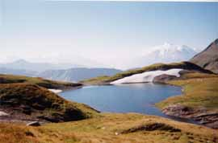
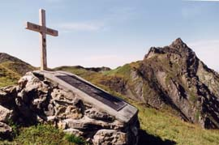

col de Forclaz (2525 m), versant S

Départ : hospice du Petit Saint Bernard (2153 m)
Aller : 9,6 km, +522 et - 140 m, 169 min
Retour : 5,6 km, + 30 et - 412 m, 95 min
Difficulté : E
Période : août - septembre
Remarque : en juillet, le lac est souvent peu apparent (c’est alors dommage).
Bibliographie : Mérel (page 181)
Course décrite page 140.
Il est intéressant de faire le tour de la cuvette suspendue du col, comportant plusieurs lacs (sente facile, fortin ruiné à 2535, autres ruines 100 m plus loin ; plaque souvenir allemande au bout de la cuvette, sur un gros rocher).
col de Forclaz (2525 m), versant N

Départ : pont de Chézari (2047 m)
Aller : 3,8 km, +518 et - 30 m, 110 min
Retour : 3,8 km, + 30 et - 518 m, 71 min
Difficulté : EE
Période : mi juillet - septembre
Remarque sur la route d’accès : une route très étroite monte en 15 km au départ des anciens thermes de Bonneval, elle est réservée aux conducteurs avertis. En terre à partir de 1600 m ; mais c’est au dessous de Versoye qu’elle est la plus étroite. L’alpagiste la descend vers 7 h 30.
Bibliographie : Mérel (page 181)
Course décrite page 140.
Peu avant le col, mémorial et croix souvenir.
Il est intéressant de faire le tour de la cuvette suspendue du col, comportant plusieurs lacs (sente facile, fortin ruiné à 2535, autres ruines 100 m plus loin ; plaque souvenir allemande au bout de la cuvette, sur un gros rocher).
Photo Guy Mounier : la stèle et le col, à D l'aiguille du Clapet (AF)